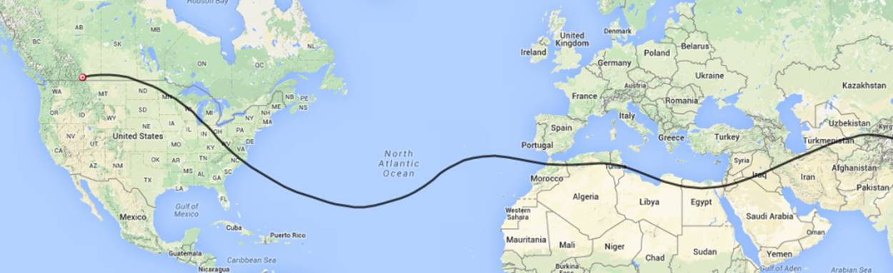

The balloon has reported in from near Seattle Washington and is currently moving East North East into Canada and traveling 116 Mph. It has completed its first orbit of the planet and is starting on its second pass. The current winds should bring it back into the U.S. near the Great Lakes. The link below will take you to the APRS screen to check on the balloon progress. http://aprs.fi/#!mt=roadmap&z=13&call=a%2FK6RPT-12&timerange=604800&tail=604800 Here is my latest prediction for the balloon’s future travel.  Don, AI6RE |